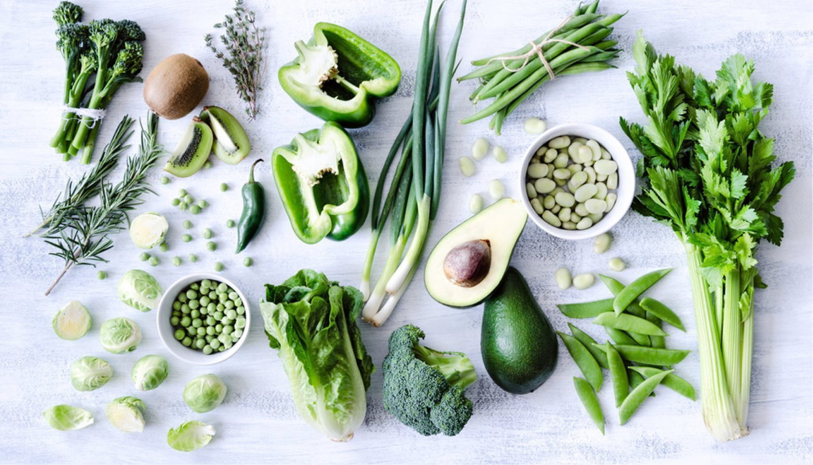

Хранение овощей

Основные правила:
Правило №1
Хранение в пакетах
Правило №3
Специальное отделение
Важно!
*Овощи нужно хранить в прохладном и сухом месте, чтобы
они не потеряли свою свежесть и питательные свойства.
Хранение овощей — важный аспект сохранения их свежести
и питательных свойств, поэтому необходимо знать правильные
методы и условия их хранения.
Хранение овощей и осознанное потребление являются важными аспектами
здорового образа жизни. Овощи богаты витаминами, минералами,
клетчаткой и другими питательными веществами, которые
необходимы для правильного функционирования организма. Однако,
не всегда легко сохранить овощи в свежем состоянии, особенно
если у вас есть ограниченное пространство для хранения или вы
не знаете, как правильно их хранить. Вот несколько советов
по хранению овощей, чтобы они оставались свежими и сохраняли
свои питательные свойства.
Храните овощи в холодильнике
Холодильник является наилучшим местом хранения овощей, так
как низкая температура помогает сохранить свежесть
и питательные свойства продукта. Однако необходимо учитывать,
что различные виды овощей могут требовать разной температуры
хранения. Например, лук и чеснок рекомендуется хранить
при температуре от 0 до 2 градусов Цельсия,
в то время как морковь и свекла - от 0 до 4
градусов Цельсия. Важно следить за сроками годности овощей
и не превышать их.
Используйте пакеты для хранения овощей
Для того чтобы овощи сохраняли свою свежесть
и не поглощали другие запахи в в холодильнике, используйте
специальные пакеты для хранения овощей. Они обеспечивают оптимальную
вентиляцию и защищают овощи от пересыхания. Не используйте
бумажные или пластиковые пакеты для хранения овощей, так
как они не обеспечивают достаточную защиту от бактерий
и грибков.
Храните овощи в отдельном отделении холодильника
Для того чтобы овощи не передавали свой запах другим продуктам
в холодильнике, лучше их хранить в отдельном отделении.
Некоторые современные холодильники имеют отдельное отделение
для овощей и фруктов.
Не ставьте овощи на верхние полки холодильника
На верхних полках холодильника температура выше, чем
на нижних, поэтому не ставьте овощи на верхние полки.
Они могут быстрее портиться и терять свои питательные свойства.
Лучше всего хранить овощи на нижних полках, где температура
ниже и стабильнее.
Не мойте овощи перед хранением
Некоторые люди моют овощи перед хранением в холодильнике,
но это не рекомендуется делать. Вода на поверхности
овощей может привести к росту бактерий и ускорить процесс
порчи. Лучше мойте овощи перед приготовлением.
Сохраняйте овощи в темном месте
Некоторые овощи, такие как картофель и лук, лучше всего
хранить в темном месте, чтобы предотвратить
их прорастание. Если у вас нет отдельного темного места
для хранения овощей, то можно использовать коробки
или бумажные пакеты для хранения овощей.
Не храните овощи рядом с фруктами
Фрукты выделяют этанол, который может ускорить процесс старения
овощей. Поэтому лучше не хранить овощи вместе с фруктами.